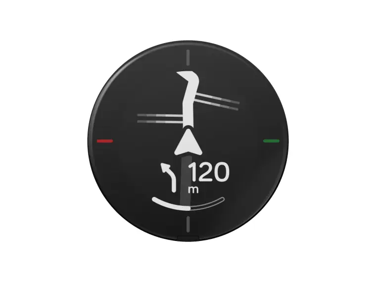

The steering wheel
And the bagage mount and options I use

The steering wheel I use is a brand and model. I have been using this since I purchased the bike in 2024.
The steering wheel is similair to a trackbike's steering wheel in shape. The difference is that it is more robust and the curly ends of the steering wheel rotate outwords where a trackbike's steering wheel goes down only.
Because of this, there is more room for bagage mounts and bags, which bikepackers are almost always in desperate need of.
The thing that hang from my steering wheel





- ROCKRIDER ADVT 900 bagmount
- Drybag 16L
- Attachable bag to mount in front
- Bottle holder
- Beelinie Velo 2
- Some offbrand mount for my phone
- Bridget the white ladybug
My bags
I always take my sleeping gear with me on my steering wheel.
The following items are always here and I always have room for more things that I buy along the way, like groceries or a jacket that needs to come off.
- Tent
- Sleeping Bag
- Inflatable pillow
- Inflatable bed
Frame Bag

I do not have a 10 thousand euro bike, so there are no extra secret frame comparements. Because of this, I need to use the space in my bikeframe for more room for luggage. I use a frame bag that fits perfectly in my bike frame. It has a volume of 6 liters and it is waterproof.
I use this bag to keep my groceries, I found that this space holds enough room for at least 3 days of groceries. I also use this bag to keep my tools and spare parts for my bike.
Voorvork en accessoires
De vork biedt ruimte voor extra cages of dry bags. Perfect om gewicht voorop de fiets te dragen.
Frame
Het hart van de fiets. Hier draag ik de meeste bagage in tassen of bidons.
- Sterk en licht aluminium
- Bevestigingspunten voor bidonhouders
- Stabiel tijdens lange ritten
Zadel en zadeltas
De zadeltas gebruik ik voor lichte, maar volumineuze spullen zoals kleding of slaapspullen.
Ketting en aandrijving

Betrouwbaar schakelen is essentieel tijdens lange reizen. Regelmatig schoonmaken voorkomt slijtage.
Pedaal
Ik gebruik stevige flat pedals met grip, ideaal voor bikepacking.
Voordeel: ik kan op gewone schoenen fietsen, handig tijdens stops.
Voorwiel
Stevig wiel met 32 spaken, geschikt voor onverharde wegen.
Achterwiel
Het achterwiel draagt de meeste belasting. Hier monteer ik ook de aandrijving en vaak extra bagage.